We now describe the basics of developing applications with Eclipse. We begin with a short C++ example that you can build and run in your development machine; then we will port the example to run on the Android device, first using Java, then using Java + native code (C/C++), and finally using only native code.
After you complete this topic you should be able to:
We will now create our first C++ example program using Eclipse. The goal of this lesson is to get you familiarized with the Eclipse environment, so we will focus on a simple program that you will run on your desktop computer.
To develop C/C++ projects, you must first open the C/C++ perspective. The Open Perspective toolbar icon is located on the top-right corner of your Eclipse IDE. Each perspective in Eclipse provides a different set of docking arrangements for viewing the content and semantics of your files and projects. The default is the Java perspective; there is also a Debug perspective, and a C++ perspective. Click on the Open Perspective icon, select Other and pick C/C++.
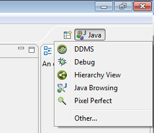 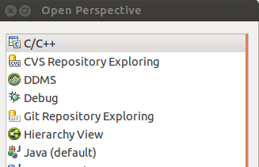Once on the C++ perspective, we will create the Fibonacci project. Select File > New > C++ project . Enter the project name, Fibonacci, and select Empty Project.
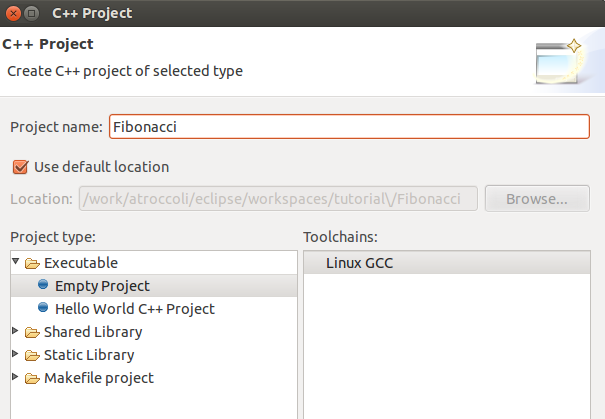The toolchain option allows you to select which compiler you will use for this project. This will be platform specific: on Linux select Linux GCC; on Windows either MinGW GCC or Cygwin GCC; on Mac select MacOSX GCC. Finally, click on Finish.
Next, select the newly created Fibonacci project, and right-click to select New > Header File. Enter Fibonacci.h under Header File: and hit Finish.
Add the declaration for our Fibonacci function, as shown below. Enter the text and save the file.
#ifndef FIBONACCI_H_
#define FIBONACCI_H_
unsigned int Fibonacci( unsigned int n );
#endif /* FIBONACCI_H_ */
It is time to create our main function. Right-click on the project name and select New > Source File . Enter main.cpp in the Source File: entry.
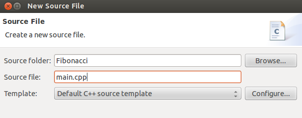Our program entry point will call the Fibonacci function and print the result out to the console.
#include <iostream>
#include "Fibonacci.h"
int main( int argc, char * argv[] )
{
std::cout << "Fibonacci(10) = " << Fibonacci( 10 ) << std::endl;
}
Now we will write the Fibonacci function. Create a new source file, name it Fibonacci.cpp and enter the text shown below.
#include "Fibonacci.h"
unsigned int Fibonacci( unsigned int n )
{
if( n == 1 ) { return 1; }
if( n == 0 ) { return 0; }
return Fibonacci( n - 1 ) + Fibonacci( n - 2 );
}
The program is done, let’s build the executable. Right-click the project and select Build Project. In the Console tab you should see the build progressing and succeeding.
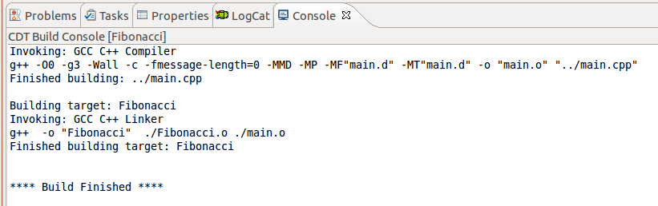Run the project. On the toolbar you will find two buttons, one for debugging and one for running the program.
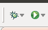Hit the run button (with the white triangle) and watch the Console tab in Eclipse, which will show the results of the compilation and then the output of the execution of the program.
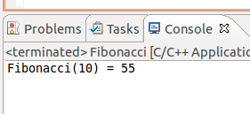Note
If you get an error message saying the binary couldn’t be found, go back to the previous step and make sure the project is built correctly.
After the program prints out the result of the Fibonacci call, it will exit.
We will now debug the program to trace its execution.
Note
Debugging requires gdb to be in your PATH. On Windows, you will be either using Cygwin gdb or MinGW gdb. If you are using Cygwin as installed by TADP, gdb will be missing. Run setup.exe under NVPACK/cygwin, select “install from Internet” and install the gdb package (under Devel section).
Open main.cpp and insert a breakpoint by double-clicking on the left margin as shown below. (Alternatively, right-click and select Toggle Breakpoint.) The blue dot is an indication that the breakpoint has been set.
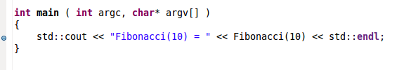Now hit the debug button on the toolbar. When the program starts you may be asked if you want to open the Debug Perspective, select Yes.
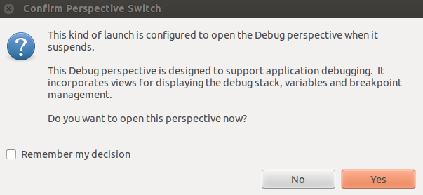Once in the Debug perspective the program execution should stop at the breakpoint you have inserted.
Note
If Eclipse complains that it can not find a source file, click on the locate Locate File... button and browse to the location of the file.
The Debug toolbar allows you to select what to do next — continue running the program, step into, or step over the function.
We will step into the Fibonacci function to see it working. Select Step into or equivalently press F5. The execution will move into the Fibonacci function. The Debug Perspective shows a great deal of information: the calling stack, the current local variables, and the source code. In addition you can add watches, inspect memory, and even disassemble the code.
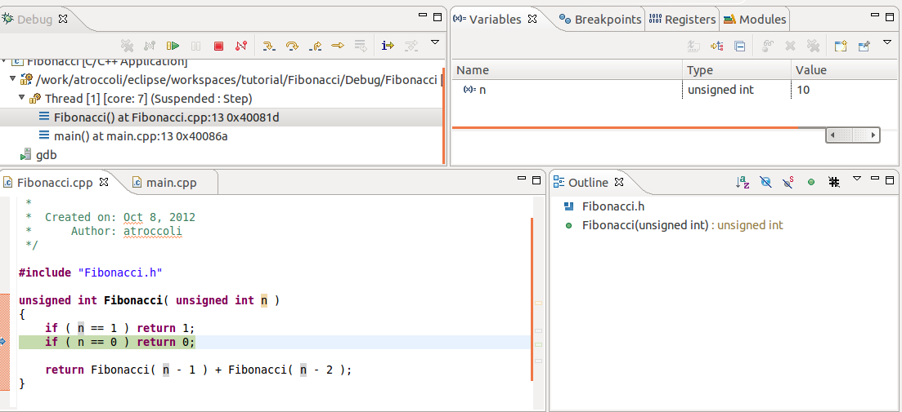Instead of computing Fibonacci of 10, let’s compute Fibonacci of 15. In the local variables view, find the variable n and change its value from 10 to 15. After you are done, hit the Resume (F8) button.
You can even make breakpoints conditional: add a breakpoint to the Fibonacci function, right-click it and select Breakpoint Properties... > Common, set Condition: to n==5, and resume debugger (F8); now the debugger should stop when the function has been called with n equals 5.
In the previous steps, we left many details uncovered. Eclipse has an internal Makefile builder that creates the Makefile based on the sources that you add to the project. That is why we were able to build the program succesfully. In addition, Eclipse has different build configurations for a project. In this example, both Debug and Release configurations were created. The Debug configuration builds the program for debugging, while the Release turns on compiler optimizations for the final program. If you want to change the build properties, right-click on the project and press Alt + Enter (Linux) or Cmd + I (Mac) to bring up the properties sheet. Under C/C++ Build you will find the build options.
We will now create a similar Android project to run on our device.
Open the Java perspective. An Android project is always a Java project with the possible addition of native code. (Later we show projects that seem to be native-only, but in reality even they use Android Java runtime services.)
Select File > New > Android Application Project. In Application Name: type Fibonacci. In Project Name, type AndroidFibonacci. This is the name of the project in Eclipse. We already have a Fibonacci project so we must choose a different name. Set the remaining properties as shown and click Next.
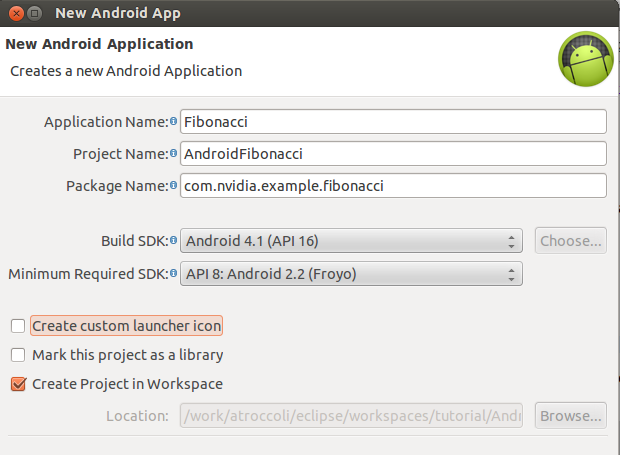Note
Don’t use spaces in the project name, otherwise native debugging will fail to find the symbols.
An Activity is Android’s basic unit of user interaction. We will manually create an Activity, so uncheck the Create Activity box and click Finish.
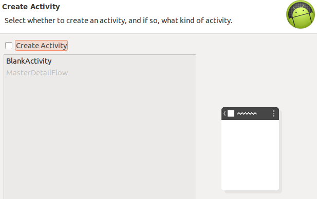You now have a basic Android project skeleton.
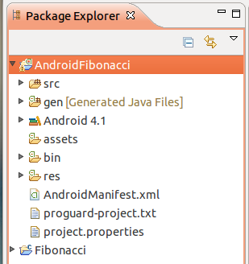We will now create a new Java class. Right-click on src and select New > Class. Fill out the class properties as shown — we want to create a class that inherits from android.app.Activity within the package com.nvidia.example.fibonacci.
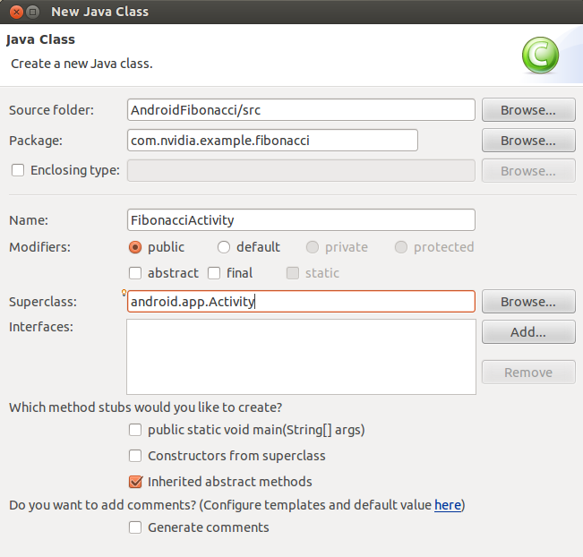Open the FibonacciActivity.java and add a Fibonacci function to the class skeleton. Java doesn’t have unsigned types, so we will use integers instead and handle negative numbers correctly.
package com.nvidia.example.fibonacci;
import android.app.Activity;
public class FibonacciActivity extends Activity {
int Fibonacci( int n ) {
if( n == 1 ) { return 1; }
if( n <= 0 ) { return 0; }
return Fibonacci( n - 1 ) + Fibonacci ( n - 2 );
}
We now have to create a simple UI to display our output. For this, we create a TextView widget inside the onCreate method. Add following code for the ‘’onCreate’’ method to the ‘’FibonacciActivity’’ class:
@Override
public void onCreate( Bundle savedInstance ) {
super.onCreate(savedInstance);
// Create the TextView
TextView tv = new TextView( this );
tv.setText( "Fibonacci(10) = " + Fibonacci( 10 ) );
setContentView( tv );
}
Note
After you copy and paste the code shown above, Eclipse will underline Bundle and TextView and note them as undefined classes. These are Android framework classes that require an import declaration. To add the imports for these, hover the cursor over the underlined text, and select the import option from the possible fixes or press the shortcut combination Ctrl-Shift-M (Linux, Windows) or CMD-SHFT-M (on Mac). You can of course just type the imports in, too.
import android.app.Activity;
import android.os.Bundle;
import android.widget.TextView;
All our code has been written. Now we need to specify in the manifest which activity to launch for this application. There can be more than one activity within an application, and one of those can be marked as the main entry point. We have created a single activity so far, this will be our MAIN and LAUNCHER activity.
Open AndroidManifest.xml. Eclipse will open the manifest editor. Select the AndroidManifest.xml tab to view the xml file.
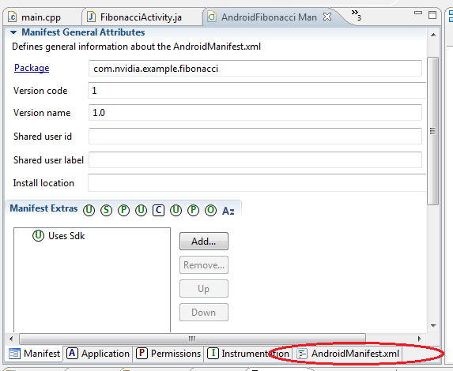Then replace the activity tag with the code shown below:
<application android:label="@string/app_name"
android:icon="@drawable/ic_launcher"
android:theme="@style/AppTheme">
<activity
android:name=".FibonacciActivity"
android:label="@string/app_name">
<intent-filter>
<action android:name="android.intent.action.MAIN" />
<category android:name="android.intent.category.LAUNCHER" />
</intent-filter>
</activity>
</application>
An Intent describes an operation to be performed. Activities with certain intent filters can perform the operations described by the intents.
Now we can run the application on the device! Make sure the device is connected an powered on. Right-click on the project name and select Run As > Android Application. Alternatively, you can click the run button on the toolbar. The code will be built and packaged into an .apk file that is pushed to the device and launched. The first time you ran the application you will be shown the “Auto Monitor Logcat” dialog. Choose Yes.
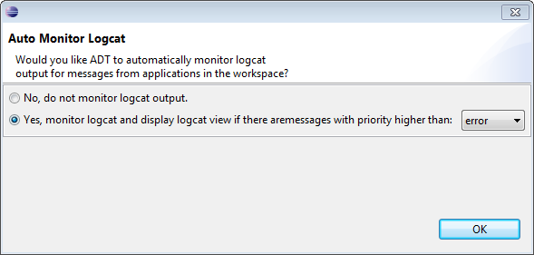Once the application is run you should see:

This concludes our simple Java application tutorial.
See also
Now that we have completed our first app, we will launch the debugger and trace execution of the Fibonacci function.
To avoid debugging the String construction, modify the code slightly as shown below and set a breakpoint on the line that calls Fibonacci (double-click on the left of the line):
@Override
public void onCreate( Bundle savedInstance ) {
super.onCreate( savedInstance );
// Create the TextView
TextView tv = new TextView( this );
int fibo = Fibonacci( 10 );
tv.setText( "Fibonacci(10) = " + fibo );
setContentView( tv );
}
Click on the Debug button, and if prompted about the Debug Configuration, select Android Application. The application package will be recompiled and copied to the device. You might see a message saying the application is waiting for the debugger to connect, this is normal. You will be taken to the Debug Perspective and will see the application hit a breakpoint. Press F5 to trace into the function call. (Note that you can click the images in this document to see them in full size.)
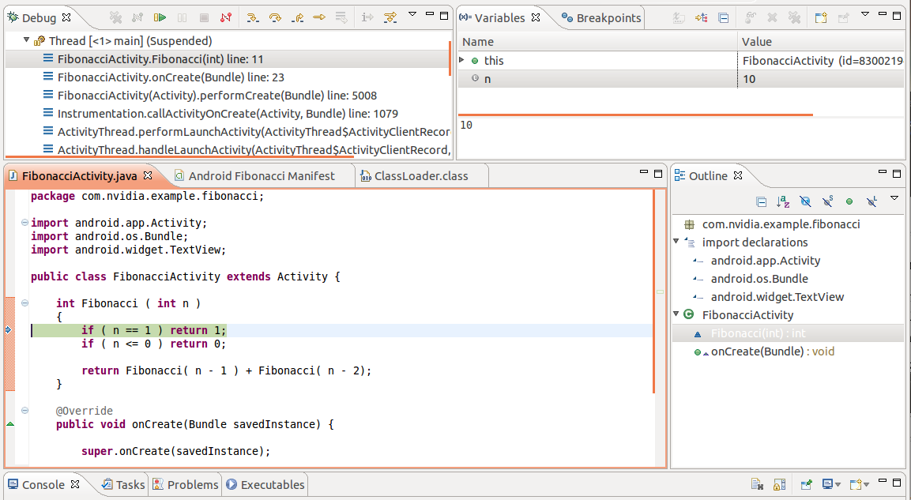Try changing the the value of n and hit F8 to continue running and see the displayed result.
Android provides a system log mechanism for developers to use from their applcations. The log has different levels of information:
- V — verbose
- D — debug
- I — info
- W — warning
- E — error
- F — fatal
All messages in the log include the process id that generated it. We will now add logging to our Fibonacci application.
Open FibonacciActivity.java and add the highlighted lines:
import android.util.Log;
public class FibonacciActivity extends Activity {
private static final String TAG = "Fibonacci";
@Override
public void onCreate( Bundle savedInstance ) {
Log.d( TAG, "onCreate called" );
super.onCreate( savedInstance );
// Create the TextView
TextView tv = new TextView( this );
int fibo = Fibonacci( 10 );
tv.setText( "Fibonacci(10) = " + fibo );
setContentView( tv );
}
Each LOG message has a TAG that comes very handy for filtering messages out. A good TAG is a name that relates to your activity.
Run the application and open the LogCat view in Eclipse to see the message. Go to Window > Show View > LogCat. If you don’t see the LogCat option, go to Window > Show View > Other... and search for LogCat. The LogCat viewer can filter the messages by process or information level, and you can also search the log as it is being dumped.
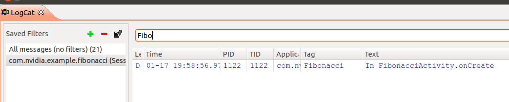Alternatively, you can display the logcat in a console window by running adb, which can be found under the androd-sdk-[linux|windows|mac]/platform-tools directory:
adb logcat -s Fibonacci:*
The -s makes the default filter silent and the Fibonacci:* tells logcat to enable the Fibonacci tagged messages.
If you would like to write debug messages to a file, you need to be aware that Android has every application running under a different user id and has a limited set of paths that are writable by the application and visible to the user. If you are using the Tegra 3 Prototype, you can create directory under data to store your log files. But on commercial devices, this location is usually protected and you will need to find a suitable user-accessible path. Android provides the means to do so. To keep it simple, let’s add logging to a file we create in external storage. Don’t get mislead by the word external here, the external storage may not be the SD card. Files you write to external storage are not deleted when the application is uninstalled.
In FibonacciActivity.java, we will add code to write to a log file. We will create a logWriter class instance variable that we will use to write text messages to a file we will create.
private FileWriter logWriter;
@Override
public void onCreate( Bundle savedInstance ) {
Log.d( TAG, "onCreate called" );
super.onCreate( savedInstance );
try {
File path = Environment.getExternalStorageDirectory();
File logfile = new File( path, "fibo_log.txt" );
logWriter = new FileWriter( logfile );
Log.i( TAG, "Writing log to " + logfile );
}
catch( IOException e ) {
Log.e( TAG, "Couldn't open log file - reason " + e.getMessage() );
}
logMessage( "FibonacciActivity.onCreate\n" );
// Create the TextView
TextView tv = new TextView( this );
int fibo = Fibonacci( 10 );
tv.setText( "Fibonacci(10) = " + fibo );
setContentView( tv );
}
Now, let’s create the auxiliary function logMessage:
private void logMessage( String msg ) {
if ( logWriter != null ) {
try {
logWriter.write( msg );
}
catch( IOException e )
{
Log.e( TAG, "Couldn't write message to log file - reason " + e.getMessage() );
}
}
}
Finally, we need to flush the file and close the writer when the Activity is paused.
@Override
public void onPause() {
logMessage( "FibonacciActivity.onPause\n" );
try {
logWriter.close();
}
catch( IOException e )
{
Log.e( TAG, "Failed to close log file - reason: " + e.getMessage() );
}
super.onPause();
}
Modify the AndroidManifest.xml and indicate that the application requests permission to write to external storage.
<!-- Before the application tag, add the requested permissions -->
<uses-permission android:name="android.permission.WRITE_EXTERNAL_STORAGE" />
<application android:label="@string/app_name"
Run the application. Because each Android device might have a different path to the external storage, we print the location of the file to the system log.
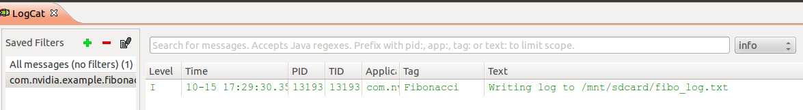To view the file, transfer it to the host computer from the command line using the command below (check the path from the log message). Note that in this implementation you have to pause the application so the file is closed so you can read the file.
adb pull /mnt/sdcard/fibo_log.txt
See also
An explanation on Android storage.
Using our FibonacciActivity as a starting point, we will add a native library that computes the Fibonacci function.
We first tell the project to build both C++ and Java code. Right-click on the project name and select Android Tools > Add Native Support ... Set the library name to libfibonacci.so, and click on Finish.
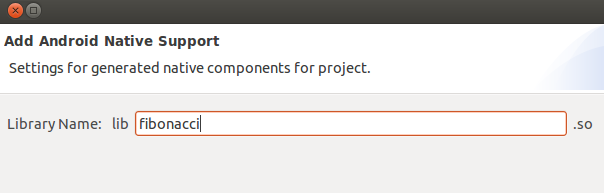You will notice that Eclipse has now changed to the C++ Perspective. In addition, there is a new folder in the project tree called jni that contains fibonacci.cpp and Android.mk
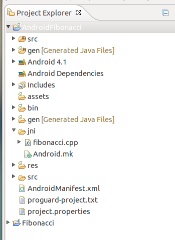Android.mk is a make file with the instructions on how to build our native sources.
LOCAL_PATH := $(call my-dir)
include $(CLEAR_VARS)
LOCAL_MODULE := fibonacci
LOCAL_SRC_FILES := fibonacci.cpp
include $(BUILD_SHARED_LIBRARY)
The LOCAL_MODULE gives the module name which in turn is used for the output filename. LOCAL_SRC_FILES contains the list of files to build, and finally, the include command is used to include the rules for building a shared library. The output of the build will be libfibonacci.so. This library needs to be explicitly loaded by the Java VM, as we show next.
Create a new file under the jni folder named Application.mk. Right-click on jni and select New > File.
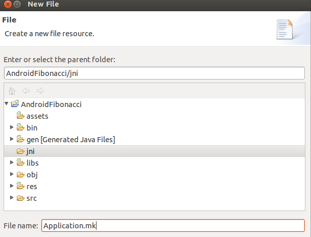While the Android.mk files defines module settings, the Application.mk file is used to define per-application settings that apply to all modules. Set the contents of the new file as shown below:
APP_ABI := armeabi-v7a
APP_PLATFORM := android-8
The APP_ABI line defines the target machine code instruction set to generate. The default is armeabi, which corresponds to an ARM ISA with no hardware floating point support. To support hardware FPU instructions of more recent ARM processors use armeabi-v7a. We also set the APP_PLATFORM to android-ver, where ver is the value of the ‘’android::minSdkVersion’’ in the ‘’AndroidManifest.xml’‘. A version above 9 is required to support ‘’NativeActivity’‘.
Let’s now modify the FibonacciActivity class and mark the Fibonacci function as native. We will also add a static method that loads the native library.
public class FibonacciActivity extends Activity {
@Override
public void onCreate( Bundle savedInstance ) {
super.onCreate( savedInstance );
// Create the TextView
TextView tv = new TextView( this );
int fibo = Fibonacci( 10 );
tv.setText( "Fibonacci(10) = " + fibo );
setContentView( tv );
}
// Our native Fibonacci function
native int Fibonacci ( int n );
static {
System.loadLibrary( "fibonacci" );
}
In our modified class the Fibonacci function doesn’t have an implementation, it is only marked as native.
To link the Java native method with its actual implementation the Java VM machine relies on name mangling. You can use the javah utility to generate the function headers for you and avoid remembering the mangling rules. For this, you will first need to compile your project. Right-click on the project name and select Build Project.
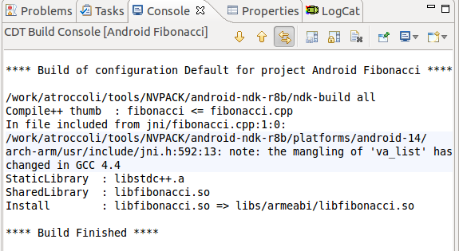You will notice that even though the fibonacci.cpp is empty, the C++ builder is invoked successfully. There is no error telling us that the native method has not been implemented. This kind of error will be a Java Exception raised by the virtual machine. You can see it for yourselft, try to run the application, it will crash. You can look at the error by browsing the logcat:
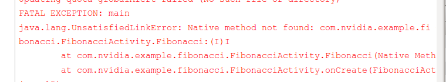If the LogCat window is too small, select the window and hit CTRL+M to expand the window, another CTRL+M brings back the other windows. Double-clicking the tab also does the same thing.
To generate the proper function header, open a console, go to your project directory (where the AndroidManifest.xml file is located) and run javah:
javah -classpath ./bin/classes -d jni com.nvidia.example.fibonacci.FibonacciActivity
The output will be the file jni/com_nvidia_example_fibonacci_FibonacciActivity.h
If it doesn’t work...
We found on some installations that javah from a previous, non-Android Java installation was on the path before the one from Android toolkit. Type which javah to find which version is used if you get problem, it should return a path within NVPACK. On cygwin, we fixed this by editing /home/<user>/.bash_profile by adding a line
PATH="/cygdrive/c/NVPACK/jdk1.6.0_24/bin:${PATH}"
Open the file fibonacci.cpp to continue working on our implementation. Create the Fibonacci function as shown and add an include for the new header.
#include <jni.h>
int Fibonacci( int n )
{
if ( n == 1 ) { return 1; }
if ( n <= 0 ) { return 0; }
return Fibonacci( n - 1 ) + Fibonacci( n - 2 );
}
Copy and paste the function declaration from jni/com_nvidia_example_fibonacci_FibonacciActivity.h into fibonacci.cpp. If you can’t see the file in the jni folder, click the folder and press F5 to refresh. Our jni function will simply be a wrapper around the Fibonacci function.
#ifdef __cplusplus
extern "C" {
#endif
/*
* Class: com_nvidia_example_fibonacci_FibonacciActivity
* Method: Fibonacci
* Signature: (I)I
*/
JNIEXPORT jint JNICALL Java_com_nvidia_example_fibonacci_FibonacciActivity_Fibonacci
( JNIEnv *env, jobject obj, jint n )
{
return Fibonacci( n );
}
#ifdef __cplusplus
}
#endif
That’s it! Build the project and click the run button to see it running on the device.
See also
Now that we have built and deployed our mixed Java and native code Activity we will show how to debug it. There are two Debug configurations that we can use. To debug Java code, we will debug as we did previously, by selecting Debug As > Android Application. This configuration launches a debugger that attaches to the Java VM. For native code, we will instead use Debug As > Android Native Application. This configuration now launches a gdbserver instance on the device that attaches to the application process.
To generate a binary library that is debugging-friendly we need to modify the build command. Right-click on the AndroidFibonacci project, and select Properties > C/C++ Build. Uncheck the Use default build command option and add the NDK_DEBUG=1 option to the build command.
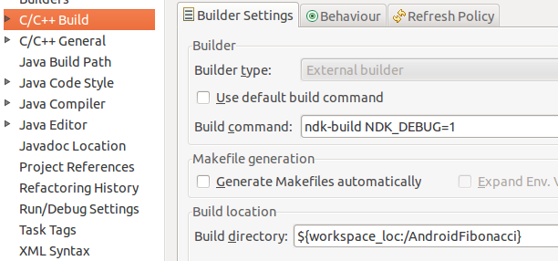More on configurations
To make switching between Release and Debug mode faster, you can use Build Configurations. Right now you only have a configuration called Default which is basically a Release build configuration created for you by Eclipse. Right-click on the project name in the Project Explorer pane, then Build Configurations, and you should see it:
Let’s create our Debug configuration. In the menu shown above, choose Manage... instead of Set Active. In the new window click New. In the field Name of the window that just opened type “Debug” and hit OK. If you go to the project’s properties now, in the C/C++ Build you should be able to pull down the Configuration menu and see your Debug configuration:
Select it and set the NDK_DEBUG=1 option as shown above. Hit OK. You can now switch between configurations by right-clicking the project’s name and then Build Configuration > Set Active:
The debugger attaches to the application process asynchronously, which means that the application will start and run until the point when gdbserver attaches to the process. As a consequence, if you are trying to put a breakpoint in code that runs early in your application, the program flow might have already gone by that point when the debugger is finally attached. To debug our Fibonacci function that is called when the application starts, we will modify fibonacci.cpp:
#ifdef __cplusplus
extern "C" {
#endif
#define WAIT_FOR_DEBUGGER
jint JNI_OnLoad( JavaVM *vm, void *reserved )
{
#if defined(WAIT_FOR_DEBUGGER)
volatile int _dbg = 1;
while ( _dbg )
{
}
#endif
return JNI_VERSION_1_2;
}
#ifdef __cplusplus
}
#endif
We have added a new function JNI_OnLoad with an infinite loop in it. JNI_OnLoad is called when the Java VM loads the library. The infinite loop will stall execution until the debugger is attached and we manually change the value of _dbg. It is marked volatile to make sure the compiler does not optimize the variable away so we can clear it from the debugger.
Launch the application for Native debugging by right-clicking on the project and selecting Debug As > Android Native Application. You will see the application starts but there is no output on the screen. At the same time Eclipse will change to the Debug Perspective.
When the Debug perspective is open, hit the Suspend button (two yellow vertical bars). In the Variables tab change the value of _dbg from 1 to 0; also set a breakpoint on the call to Fibonacci. Finally, let the program continue running by pressing F8; you should immediately hit the breakpoint you have just set.
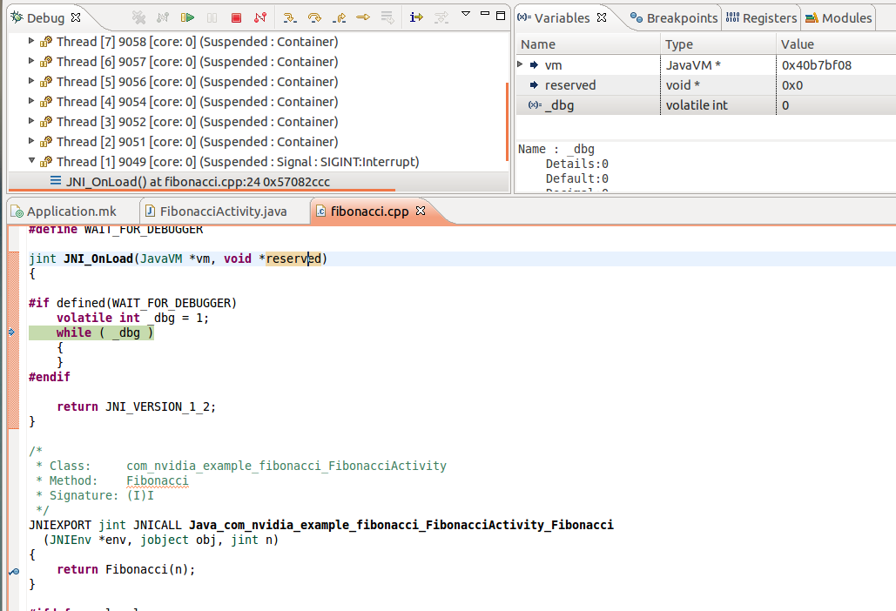You can now trace into the function by pressing F5 or step over it by pressing F6. Change the value of n and press F8 to continue with the execution.
We are done! You have now seen the basics on how to do Java and native code debugging of Android applications running on the device from Eclipse.
We can print debugging messages to the Android log from native code using the __android_log_print function.
Open fibonacci.cpp and add the following code at the top of the file.
#if !defined(LOG_TAG)
#define LOG_TAG "Fibonacci"
#endif
#define LOGV(...) __android_log_print(ANDROID_LOG_VERBOSE, LOG_TAG, __VA_ARGS__)
#define LOGD(...) __android_log_print(ANDROID_LOG_DEBUG , LOG_TAG, __VA_ARGS__)
#define LOGI(...) __android_log_print(ANDROID_LOG_INFO , LOG_TAG, __VA_ARGS__)
#define LOGW(...) __android_log_print(ANDROID_LOG_WARN , LOG_TAG, __VA_ARGS__)
#define LOGE(...) __android_log_print(ANDROID_LOG_ERROR , LOG_TAG, __VA_ARGS__)
#include <android/log.h>
These are convenient macros that write to the log at the different information levels.
Add the following line to print the result of the Fibonacci function to the log.
JNIEXPORT jint JNICALL Java_com_nvidia_example_fibonacci_FibonacciActivity_Fibonacci
( JNIEnv *env, jobject obj, jint n )
{
LOGV( "Fibonaci(%d) = %d\n", n, Fibonacci( n ) );
return Fibonacci( n );
}
Finally, we need to modify the Android.mk to link the log library into the project.
LOCAL_PATH := $(call my-dir)
include $(CLEAR_VARS)
LOCAL_MODULE := fibonacci
LOCAL_SRC_FILES := fibonacci.cpp
LOCAL_LDLIBS := -llog
include $(BUILD_SHARED_LIBRARY)
The LOCAL_LDLIBS directive specifies a list of system libraries provided by the NDK that we can link into our project. In the above example, the log library defines __android_log_print.
Comment out the definition of WAIT_FOR_DEBUGGER of the previous section (so you don’t stay in the infinite loop), run the project, and verify that you can see the log message.
When logging to a file from native code we are still bound by the same restrictions we mentioned regarding user-accessible paths. Additionally, there is no native version of Environment.getExternalStorageDirectory() in the NDK, so we will have to pass the directory information from Java.
In FibonacciActivity.java, add a new native method that will enable native code logging into the specified file.
// Enable native logging to the given filename
native void enableNativeLogging( String filename );
In onCreate we will call enableNativeLogging :
@Override
public void onCreate( Bundle savedInstance )
{
super.onCreate( savedInstance );
[...]
enableNativeLogging( Environment.getExternalStorageDirectory() + "/fibo_native_log.txt" );
}
Now, let’s implement the native side of enableNativeLogging. First, in the file fibonacci.cpp we create an ofstream with the scope of the entire source file to hold a handle to the log file (and include fstream):
#include <fstream>
static std::ofstream gLogFile;
Second, we implement enableNativeLogging; this function calls into JNI to convert the Java string into a C-style string, opens the file, and then releases the allocated C-style string:
/*
* Class: com_nvidia_example_fibonacci_FibonacciActivity
* Method: enableNativeLogging
* Signature: (Ljava/lang/String;)V
*/
JNIEXPORT void JNICALL Java_com_nvidia_example_fibonacci_FibonacciActivity_enableNativeLogging
( JNIEnv *env, jobject obj, jstring jfilename )
{
if( gLogFile.is_open() )
{
gLogFile.close();
}
// Call JNI to convert the jstring into UTF 8 bit characters
const char* filename = env->GetStringUTFChars( jfilename, NULL );
// If filename is non-empty, open the file.
if( filename[0] != 0 )
{
// Open the file
gLogFile.open( filename );
}
// Release the string allocated by JNI.
env->ReleaseStringUTFChars( jfilename, filename );
}
If you call the function a second time with an empty string, the file will be closed. In addition, because we are using ofstream, when the program exits the gLogFile object will go out of scope and the file will be closed. Alternatively, you could add enableNativeLogging( "" ); in the onPause() method in the Java side.
Note that we repeated the step described above to generate the proper function header: in a console, go to your project directory and run javah:
javah -classpath ./bin/classes -d jni com.nvidia.example.fibonacci.FibonacciActivity
We will extend our Fibonacci example further by showing how to call Java methods from the native code. We will add the ability to log messages into the TextView to mimic the behavior of a console application.
Open the file FibonacciActivity.java. Copy the new code for the FibonacciActivity class. We have moved the TextView to class member scope and we have added a function called printToConsole that we can call to append text to this TextView. In addition, we have a new native function called FibonacciSequence.
public class FibonacciActivity extends Activity {
private TextView mConsoleText;
@Override
public void onCreate( Bundle savedInstance ) {
super.onCreate( savedInstance );
// Create the TextView.
mConsoleText = new TextView( this );
setContentView( mConsoleText );
// Generate the Fibonacci sequence up to 10.
FibonacciSequence( 10 );
}
// Append new text to the consoleText TextView.
private void printToConsole( String text ) {
mConsoleText.setText( mConsoleText.getText() + text );
}
// Native Fibonacci function - returns the nth Fibonacci number.
native int Fibonacci ( int n );
// Computes the Fibonacci sequence up to n and prints
// it through the print function.
native void FibonacciSequence( int n );
static {
System.loadLibrary( "fibonacci" );
}
}
Since we have added a new native method we need to recreate the jni headers. First, build the project (this is necessary to compile the new Java code). Then, as we did in our previous tutorial, run javah:
javah -classpath ./bin/classes -d jni com.nvidia.example.fibonacci.FibonacciActivity
File jni/com_nvidia-example_fibonacci_FibonacciActivity.h will be regenerated.
Now we need to add the new method to our native library. Open fibonacci.cpp and copy and paste the newly added function header from com_nvidia-example_fibonacci_FibonacciActivity.h. Our implementation of FibonacciSequence will compute the Fibonacci numbers and print them to the TextView by calling the Java printToConsole method. The function code looks like this:
#include <sstream>
[...]
/*
* Class: com_nvidia_example_fibonacci_FibonacciActivity
* Method: FibonacciSequence
* Signature: (I)V
*/
JNIEXPORT void JNICALL Java_com_nvidia_example_fibonacci_FibonacciActivity_FibonacciSequence
( JNIEnv *env, jobject obj, jint n )
{
const char *methodName = "printToConsole";
const char *methodSignature = "(Ljava/lang/String;)V";
jclass objClass = ( jclass ) env->GetObjectClass( obj );
jmethodID methodId = env->GetMethodID( objClass, methodName, methodSignature );
for( int i = 0; i <= n; i++ )
{
// Our string buffer for the output message.
std::stringstream msg;
// Compute the current Fibonacci number.
int fibo = Fibonacci( i );
// Create the msg to print.
msg << "Fibonacci(" << i << ") = " << fibo << std::endl;
// Create a jstring to send the message to the Java VM.
jstring jtext = env->NewStringUTF( msg.str().c_str() );
// Call the Java class printToConsole method.
env->CallVoidMethod( obj, methodId, jtext );
// Delete the local reference created by NewStringUTF
// to allow the Java VM to garbage collect the jstring object.
env->DeleteLocalRef( jtext );
}
}
In order to call the printToConsole method on the passed Java object, we need to obtain its method ID from the Java VM. First we ask for the jclass of the passed object by calling GetObjectClass. Then we obtain the jmethodID by calling GetMethodID and passing the corresponding jclass identifier, the method name, and the method signature. The method name is printToConsole and the signature “(Ljava/lang/String;)V, which stands for a method returning void that takes an argument of type java.Lang.String.
When we call the retrieved method we can’t pass a pointer to char as an argument, we need to pass it a String object. The JNI environment has a helper function to do this. The newStringUTF function takes a char * and returns a jstring instance. We can then call the Java function using the CallVoidMethod and passing the obj, the method ID and the string.
The Android NDK provides different C++ STL implementations. To default system STL is very limited. To enable the GNU STL implementation, and use the ofstream object we need to modify the Application.mk file. By adding the following line to the Application.mk the NDK build system will set the include path for the headers and add the static library.
# APP_STL
# By default, the NDK build system provides C++ headers for the minimal
# C++ runtime library (/system/lib/libstdc++.so) provided by the Android
# system.
#
# However, the NDK comes with alternative C++ implementations that you can
# use or link to in your own applications. Define APP_STL to select one of
# them. Examples are:
#
# APP_STL := stlport_static --> static STLport library
# APP_STL := stlport_shared --> shared STLport library
# APP_STL := system --> default C++ runtime library
APP_STL := gnustl_static
Comment out the #define WAIT_FOR DEBUGGER; we will not be attaching the debugger for this run.
Build the program and run it. You will see the following output:
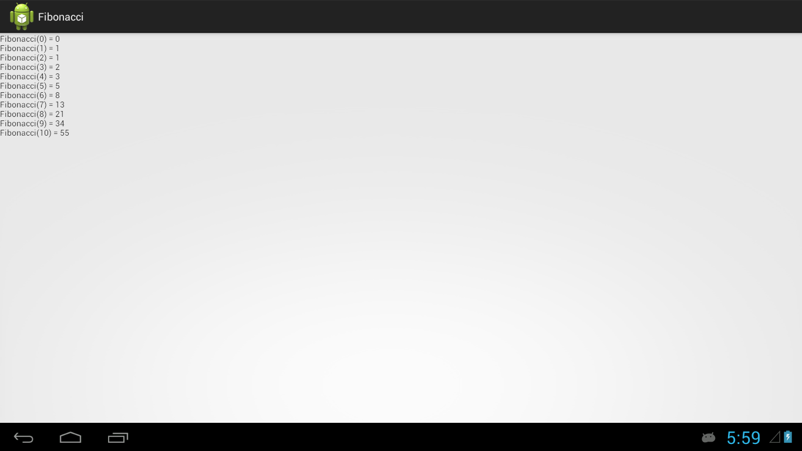Android provides a NativeActivity framework that can be used to run applications that are written entirely in native code. A NativeActivity can have event loops to receive user input, but will have no UI building blocks; it was developed for game developers and it is expected that the UI is built using OpenGL ES rendering.
As an introduction to NativeActivity, we will write our Fibonacci example using this framework. Since there is no Java code, let’s start with a new project. The following steps assume you have already performed all the previous tutorials.
From the Java perspective, create a new Android Application project as we did before. Set the Application, Project, and package names, and the minimum Android SDK version to 9.
Add Android Native Support. Set the Library Name to libfibonacci.so.
Create the jni/Application.mk file and set the APP_ABI to armeabi-v7a and the android platform to 14 (this is the first platform to support the NativeActivity). Also, set APP_STL to gnustl_static.
APP_ABI := armeabi-v7a
APP_PLATFORM := android-9
APP_STL := gnustl_static
Now we have to setup the AndroidManifest.xml, which has a few extra settings for the NativeActivity. In the application section we specify the app doesn’t have any Java code.
<!-- We do not have Java code. Therefore android:hasCode is set to false. -->
<application android:label="@string/app_name"
android:hasCode="false">
In the activity block (within the application block) we also need to add a few new items. First, the activity name needs to be set to android.app.NativeActivity. This is an actual Java class that exists in the Android SDK and that provides the glue for the native code. Then we configure the application to be fullscreen. And finally, we add a meta-data tag to indicate the name of the library containing the native code.
<!-- Our activity is the built-in NativeActivity framework class.
This will take care of integrating with our NDK code. -->
<activity android:name="android.app.NativeActivity"
android:label="@string/app_name"
android:configChanges="orientation|keyboard|keyboardHidden"
android:theme="@android:style/Theme.NoTitleBar.Fullscreen">
<!-- Tell NativeActivity the name of or .so -->
<meta-data android:name="android.app.lib_name"
android:value="fibonacci" />
<intent-filter>
<action android:name="android.intent.action.MAIN" />
<category android:name="android.intent.category.LAUNCHER" />
</intent-filter>
</activity>
Open the Android.mk. Our library needs to statically link with the android_native_app_glue library, which is provided as a separate module, and against the shared system log and android libraries.
LOCAL_PATH := $(call my-dir)
include $(CLEAR_VARS)
LOCAL_MODULE := fibonacci
LOCAL_SRC_FILES := fibonacci.cpp
LOCAL_LDLIBS := -llog -landroid
LOCAL_STATIC_LIBRARIES := android_native_app_glue
include $(BUILD_SHARED_LIBRARY)
$(call import-module,android/native_app_glue)
Now open fibonacci.cpp and add the following code:
#if !defined(LOG_TAG)
#define LOG_TAG "Fibonacci"
#endif
#define LOGV(...) __android_log_print(ANDROID_LOG_VERBOSE, LOG_TAG, __VA_ARGS__)
#define LOGD(...) __android_log_print(ANDROID_LOG_DEBUG , LOG_TAG, __VA_ARGS__)
#define LOGI(...) __android_log_print(ANDROID_LOG_INFO , LOG_TAG, __VA_ARGS__)
#define LOGW(...) __android_log_print(ANDROID_LOG_WARN , LOG_TAG, __VA_ARGS__)
#define LOGE(...) __android_log_print(ANDROID_LOG_ERROR , LOG_TAG, __VA_ARGS__)
#include <android/log.h>
#include <android_native_app_glue.h>
int Fibonacci( int n )
{
if ( n == 1 ) { return 1; }
if ( n <= 0 ) { return 0; }
return Fibonacci( n - 1 ) + Fibonacci( n - 2 );
}
/**
* This is the main entry point of a native application that is using
* android_native_app_glue. It runs in its own thread, with its own
* event loop for receiving input events and doing other things.
*/
void android_main( struct android_app *state )
{
// Make sure glue isn't stripped.
app_dummy();
LOGV( "Fibonacci(10) = %d\n", Fibonacci( 10 ) );
// Event loop manager.
// This is an empty event loop manager that waits for the user
// to destroy the activity.
while( 1 )
{
// Read all pending events.
int ident;
int events;
struct android_poll_source *source;
// Wait indefinitely for an event to occur.
while( ( ident = ALooper_pollAll( -1, NULL, &events,
( void ** )&source ) ) >= 0 )
{
// Process this event.
if( source != NULL )
{
source->process( state, source );
}
// Check if we are exiting.
if( state->destroyRequested != 0 )
{
return;
}
}
}
}
The new code includes android_native_app_glue.h which provides the callbacks for notification of Activity life cycle events. In addition, the native application glue also requires an android_main function to be defined as the entry point for the application.
To keep our sample short, we haven’t created any UI, so we simply print to the Android log the result of Fibonacci(10). In addition, we do have to process application events for the Activity to remain responsive. This is done inside the event manager loop, where we process all events until the user requests the app to exit.
Note
As the comment says, app_dummy() is needed to make sure that the glue module is not stripped. Without it, none of the methods the module would be called directly in the code, as the glue module is basically a bunch of callbacks, and the linker would strip the module, thus causing a RuntimeExeption.
Try running the application. The screen will remain blank. Check the log message for the output. A handy way to find it quickly is to type in the LogCat search line tag:fib.
In an earlier example we showed how we could log into a file from native code, with the full path filename being provided by the Java application. When running a NativeActivity, we will find the path available to the application using the externalDataPath member of the ANativeActivity struct.
Open fibonacci.cpp and add the following includes and static declarations.
#include <fstream>
#include <sstream>
#include <sys/stat.h>
#include <errno.h>
static std::ofstream gLogFile;
Then add the following code to the android_main function to create and open the file. As opposed to what we have seen in the Java framework, the path might not exist, so we will need to create it. For this, we have developed an auxiliary function makepath that we will present shortly.
void android_main( struct android_app *state )
{
// Make sure glue isn't stripped.
app_dummy();
LOGV( "Fibonacci(10) = %d\n", Fibonacci( 10 ) );
std::stringstream filename;
filename << state->activity->externalDataPath << "/" << "fibo_native_log.txt";
MakePath( state->activity->externalDataPath, 0770 );
// Open the log file for output
gLogFile.open( filename.str().c_str() );
if( gLogFile.is_open() )
{
LOGI( "Opened log file %s\n", filename.str().c_str() );
gLogFile << "FibonacciActivity Native log file " << filename << std::endl;
}
else
{
LOGE( "Couldn't open the log file %s\n", filename.str().c_str() );
}
Add the MakePath and MakeDir functions before android_main:
static int MakeDir( std::string const &path, mode_t mode )
{
struct stat st;
if( stat( path.c_str(), &st ) != 0 )
{
if( mkdir( path.c_str(), mode ) != 0 && errno != EEXIST )
{
return false;
}
}
else if( !S_ISDIR( st.st_mode ) )
{
errno = ENOTDIR;
return false;
}
return true;
}
static bool MakePath( std::string const &path, mode_t mode )
{
std::string cstr( path );
int cpos = 0;
int ppos = 0;
bool success = true;
while( success && ( cpos = cstr.find_first_of( "/", ppos ) ) != std::string::npos )
{
if( cpos != ppos )
{
/* Neither root nor double slash in path */
cstr[cpos] = '\0';
success = MakeDir( cstr, mode );
cstr[cpos] = '/';
}
ppos = cpos + 1;
}
if( success )
{
success = MakeDir( path, mode );
}
return success;
}
Modify the manifest to give the app the rights to write to external storage.
Try it out.
See also

{kind=link}
{kind=link}
{kind=link}
{kind=link}
{kind=link}
{kind=link}
{kind=link}
{kind=link}
{kind=link}
{kind=link}
{kind=link}
{kind=link}
{kind=link}
{kind=link}
{kind=link}
{kind=link}
{kind=link}
{kind=link}
{kind=link}
{kind=link}
{kind=link}
{kind=link}
{kind=link}
{kind=link}
{kind=link}
{kind=link}
{kind=link}
{kind=link}
{kind=link}
{kind=link}
{kind=link}
{kind=link}